import xarray
import matplotlib.pyplot as plt
import numpy as np
from matplotlib.axes import Axes
import pandas as pd
RUN_VARS = ["01", "05", "06", "07", "08"]
VARS = ["tasmax", "tasmin", "pr"]
def get_root_filepath():
return "https://climrecal.blob.core.windows.net/analysis/cpm-median-time-series"def add_cols(df):
df["day"] = df["time"].apply(lambda x: x.timetuple().tm_yday)
df["month"] = df["time"].apply(lambda x: x.month)
df["year"] = df["time"].apply(lambda x: x.year)
df["day_of_month"] = df["time"].apply(lambda x: x.day)
df["leap_year"] = df["time"].apply(lambda x: x.year % 4 == 0)
return df
def get_days(is_leap_year: bool) -> np.array:
if not is_leap_year:
# https://docs.xarray.dev/en/stable/generated/xarray.Dataset.convert_calendar.html
# February 6th (36), April 19th (109), July 2nd (183), September 12th (255), November 25th (329).
# First missing day should be 37, not 36 since February 6th is 37
return np.array([37, 109, 183, 255, 329])
else:
# January 31st (31), March 31st (91), June 1st (153), July 31st (213), September 31st (275) and November 30th (335).
return np.array([31, 91, 153, 213, 275, 335])
def get_data() -> dict[str, dict[str, tuple[pd.DataFrame, pd.DataFrame]]]:
data = {}
for var in VARS:
data[var] = {}
for run_var in RUN_VARS:
path_raw = f"{get_root_filepath()}/cpm-raw-medians/median-{var}-{run_var}.nc#mode=bytes"
path_con = f"{get_root_filepath()}/cpm-converted-nearest-medians/median-{var}-{run_var}.nc#mode=bytes"
x_raw = xarray.load_dataset(path_raw)
x_con = xarray.load_dataset(path_con)
df_raw = add_cols(
x_raw.convert_calendar("standard", align_on="year")
.to_pandas()
.reset_index()
)
df_con = add_cols(x_con.to_pandas().reset_index())
data[var][run_var] = (df_raw, df_con)
return data# Load all data
data = get_data()Warning 3: Cannot find header.dxf (GDAL_DATA is not defined)# Example
var, run_var = "tasmax", "01"
df_raw, df_con = data[var][run_var]# Missing Day 37
df_raw.iloc[64:70]| time | tasmax | day | month | year | day_of_month | leap_year | |
|---|---|---|---|---|---|---|---|
| 64 | 1981-02-04 12:00:00 | 7.901025 | 35 | 2 | 1981 | 4 | False |
| 65 | 1981-02-05 12:00:00 | 9.846338 | 36 | 2 | 1981 | 5 | False |
| 66 | 1981-02-07 12:00:00 | 10.244776 | 38 | 2 | 1981 | 7 | False |
| 67 | 1981-02-08 12:00:00 | 7.123193 | 39 | 2 | 1981 | 8 | False |
| 68 | 1981-02-09 12:00:00 | 7.830713 | 40 | 2 | 1981 | 9 | False |
| 69 | 1981-02-10 12:00:00 | 7.916040 | 41 | 2 | 1981 | 10 | False |
def plot_by_day(
data,
var: str,
run_var: str,
year: int,
leap_year: bool,
plot_diff: bool,
ax: Axes,
lw=0.8,
):
df_raw, df_con = data[var][run_var]
if not plot_diff:
for i, df in enumerate([df_raw, df_con]):
if leap_year is not None:
df2 = df[df["leap_year"].eq(leap_year)]
else:
df2 = df
if year is None:
x = df2.groupby("day")[var].median()
else:
x = df2[df2["year"].eq(year)].groupby("day")[var].first()
if i == 0:
if leap_year is not None:
ax.vlines(
get_days(leap_year),
x.min(),
x.max(),
zorder=-1,
lw=0.4,
color="k",
ls=":",
)
ax.plot(x.index, x, lw=lw, alpha=0.8)
else:
ax.plot(x.index, x, lw=lw, alpha=0.8)
# pass
else:
series = []
for i, df in enumerate([df_raw, df_con]):
if leap_year is not None:
df2 = df[df["leap_year"].eq(leap_year)]
else:
df2 = df
if year is None:
x = df2.groupby("day")[var].median()
else:
x = df2[df2["year"].eq(year)].groupby("day")[var].first()
series.append(x)
# Proportion difference
# x2 = (series[1] - series[0]) / series[0]
# Use absolute difference
x2 = series[1] - series[0]
ax.vlines(
get_days(leap_year),
x2.min(),
x2.max(),
zorder=-1,
lw=0.4,
color="k",
ls=":",
)
ax.plot(x2.index, x2, lw=lw, alpha=0.8)
ax.set_title(f"Year: {year}, Leap year: {leap_year}")
if not plot_diff:
ax.set_ylabel(f"Absolute difference ({var})")
else:
ax.set_ylabel(f"Value ({var})")def plot_array(data, year, leap_year=True, plot_diff=False, lw=0.8):
run_vars = ["01", "05", "06", "07", "08"]
vars = ["tasmax", "tasmin", "pr"]
fig, axs = plt.subplots(
len(vars),
len(run_vars),
squeeze=False,
sharex=True,
sharey="row",
figsize=(14, 6),
)
for row, var in enumerate(vars):
for col, run_var in enumerate(run_vars):
ax = axs[row][col]
plot_by_day(data, var, run_var, year, leap_year, plot_diff, ax=ax, lw=lw)
if col == 0:
ax.set_ylabel(var, fontsize="medium")
else:
ax.set_ylabel("")
if row == 0:
ax.set_title(f"Run: {run_var}", fontsize="medium")
else:
ax.set_title("")plot_by_day(data, "tasmax", "08", None, leap_year=True, plot_diff=False, ax=plt.gca())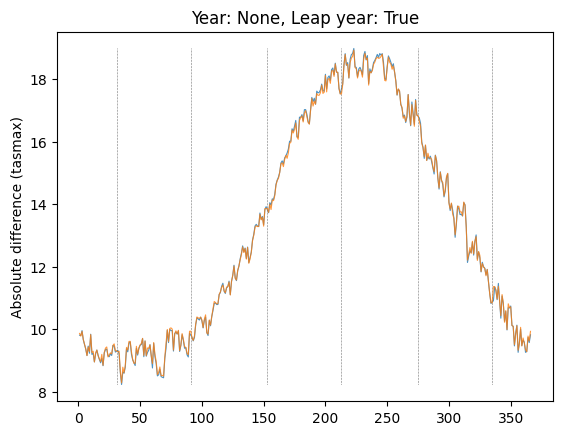
plot_by_day(data, "tasmax", "08", None, leap_year=True, plot_diff=True, ax=plt.gca())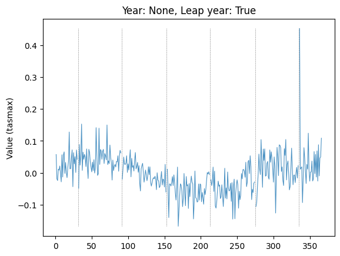
plot_by_day(data, "tasmax", "08", None, leap_year=False, plot_diff=True, ax=plt.gca())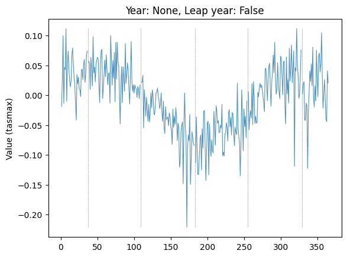
# Plot arrays
for year in [None, 1984]:
for leap_year in [True, False]:
for plot_diff in [False, True]:
if year is not None:
actual_year = year if leap_year else 1983
else:
actual_year = None
print(
f"Plot diff: {plot_diff}; year: {actual_year}; leap_year: {leap_year}"
)
# Leap years, medians
plot_array(data, year=actual_year, leap_year=leap_year, plot_diff=plot_diff)
plt.show()Plot diff: False; year: None; leap_year: True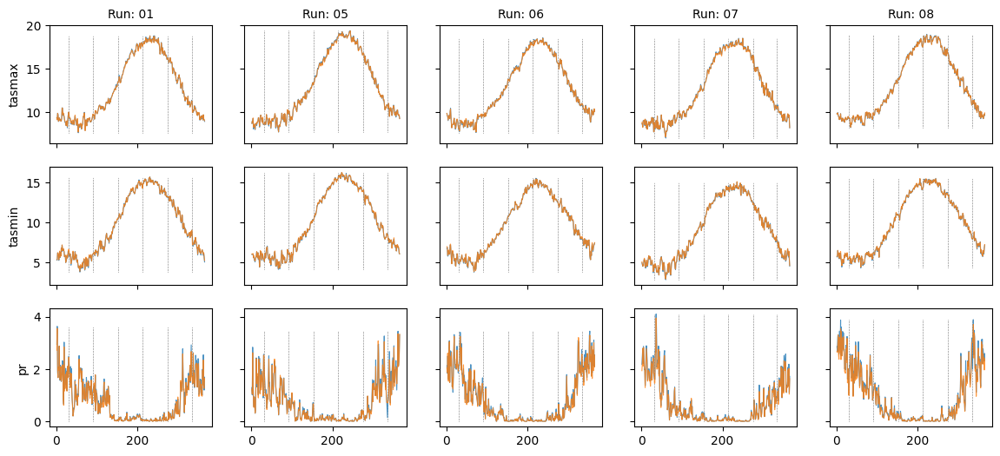
Plot diff: True; year: None; leap_year: True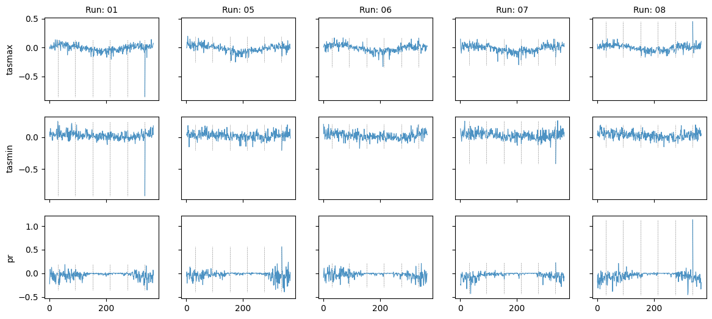
Plot diff: False; year: None; leap_year: False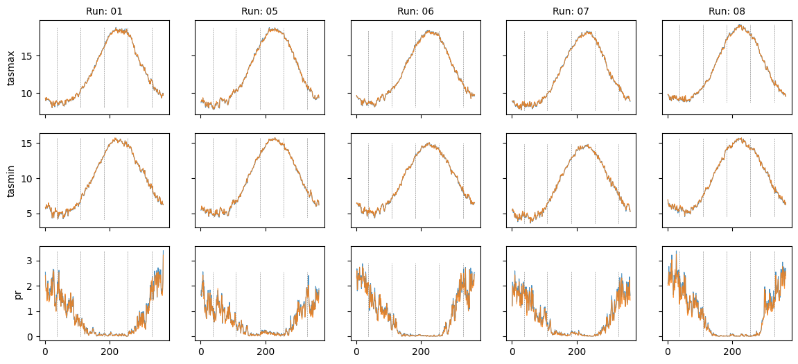
Plot diff: True; year: None; leap_year: False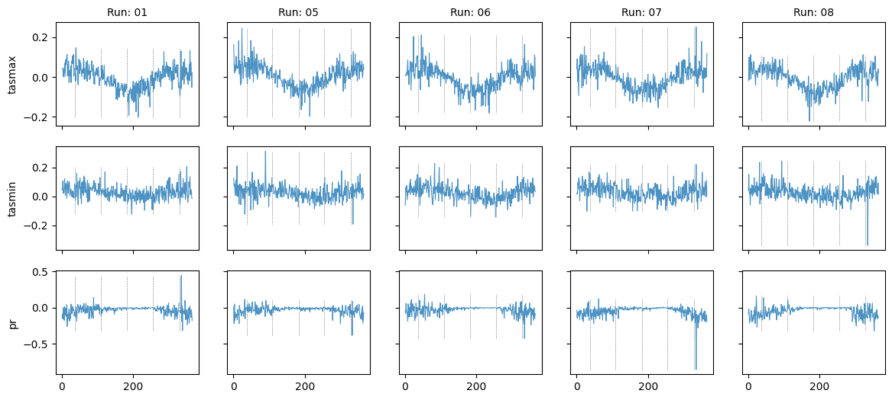
Plot diff: False; year: 1984; leap_year: True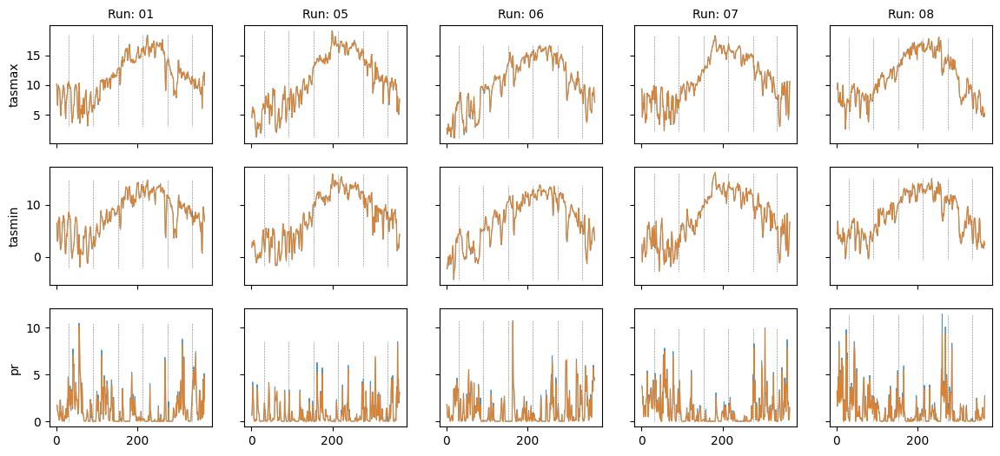
Plot diff: True; year: 1984; leap_year: True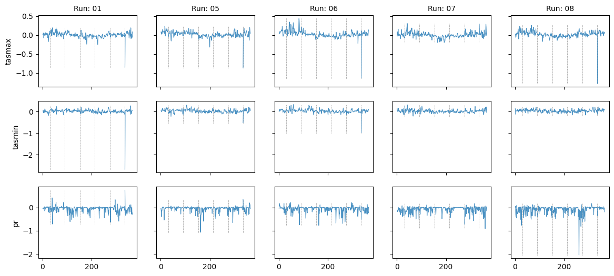
Plot diff: False; year: 1983; leap_year: False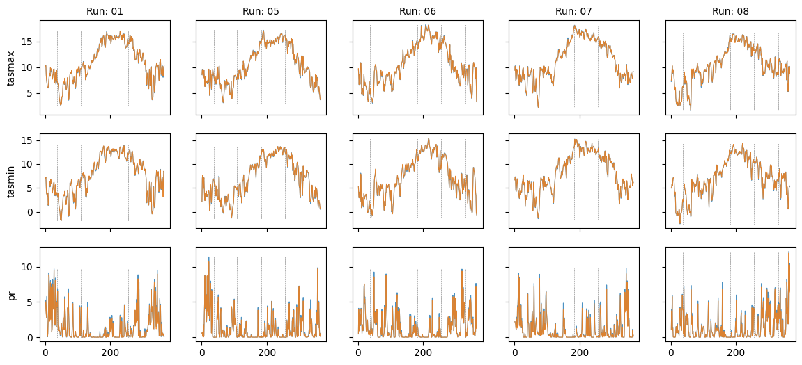
Plot diff: True; year: 1983; leap_year: False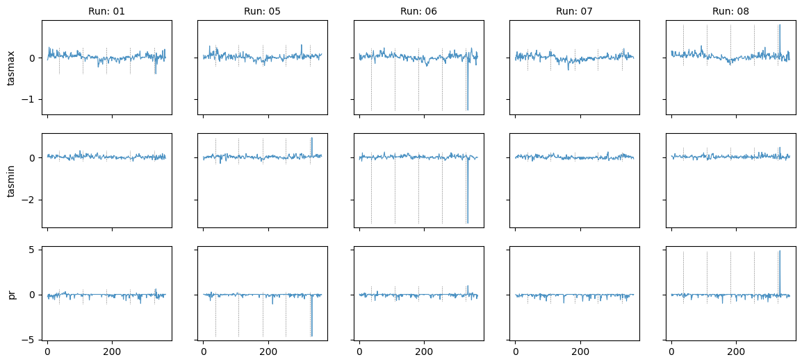
# Explore location of spike in difference in var="tasmax", run_var="08"
plot_by_day(
data,
var="tasmax",
run_var="08",
year=1983,
leap_year=False,
plot_diff=False,
ax=plt.gca(),
)
# Subset days to region where spike is
plt.xlim(320, 340)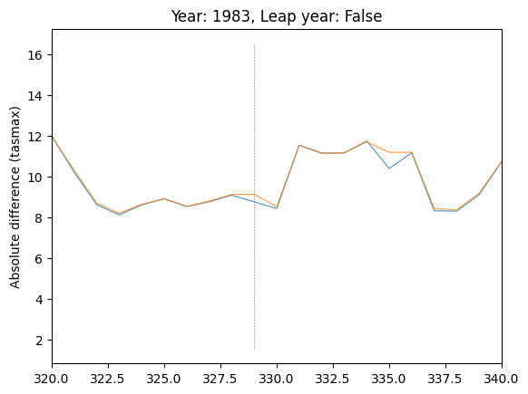
plot_by_day(
data,
var="tasmax",
run_var="08",
year=1983,
leap_year=False,
plot_diff=True,
ax=plt.gca(),
)
plt.xlim(320, 340)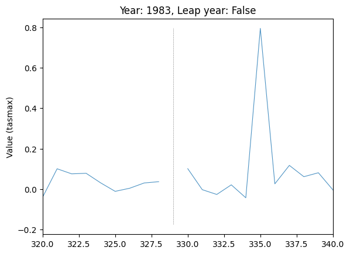
# Explore location of spike in difference in var="tasmax", run_var="08"
plot_by_day(
data,
var="tasmax",
run_var="08",
year=1984,
leap_year=True,
plot_diff=False,
ax=plt.gca(),
)
# Subset days to region where spike is
plt.xlim(320, 340)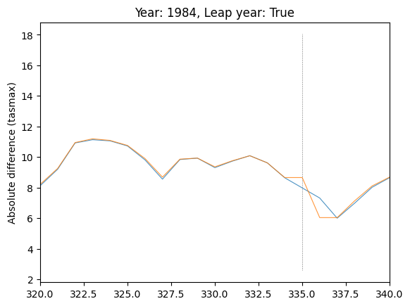
# Explore location of spike in difference in var="tasmax", run_var="08"
plot_by_day(
data,
var="tasmax",
run_var="08",
year=1984,
leap_year=True,
plot_diff=True,
ax=plt.gca(),
)
# Subset days to region where spike is
plt.xlim(320, 340)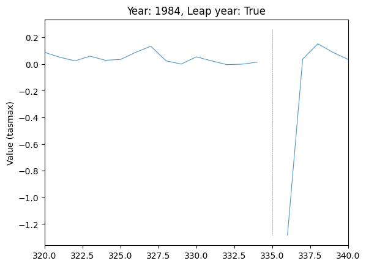